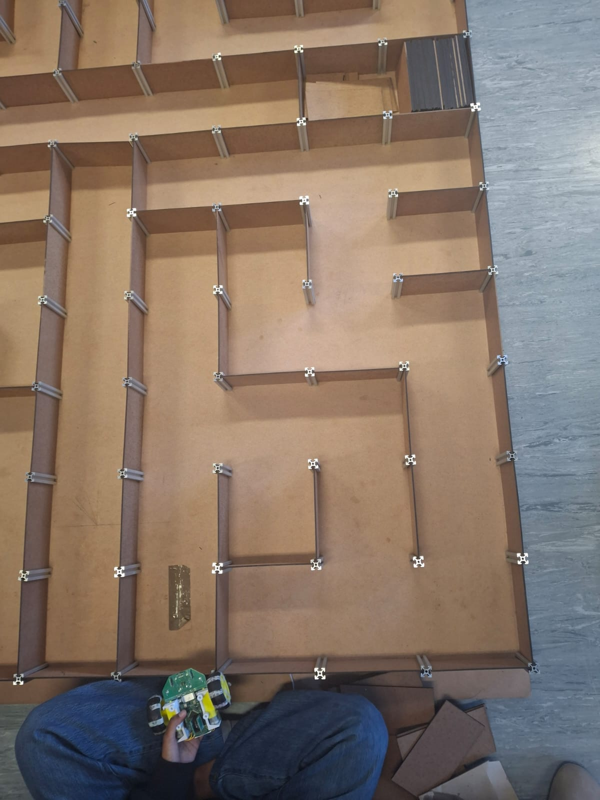
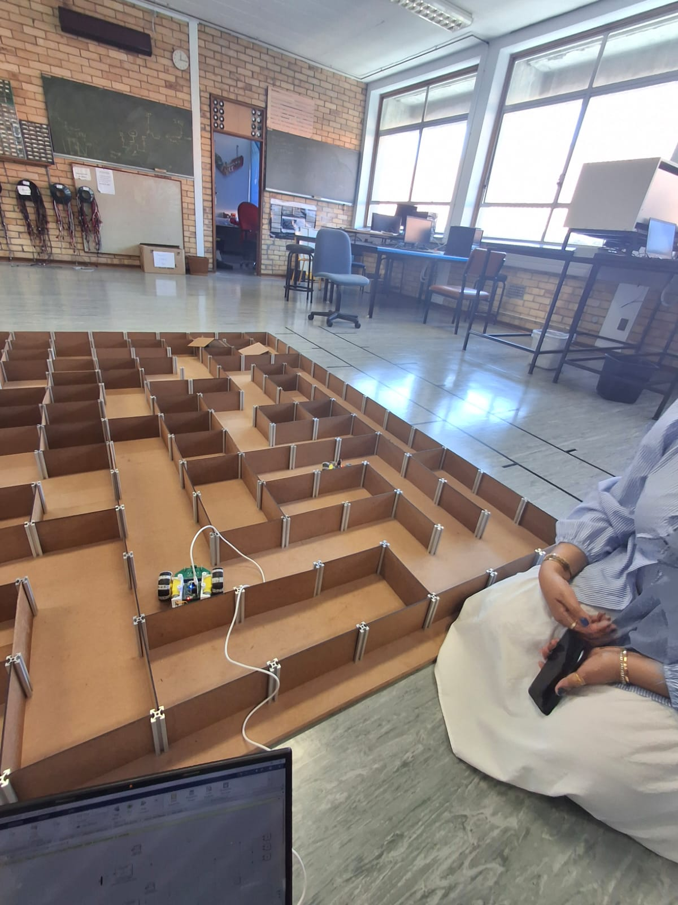
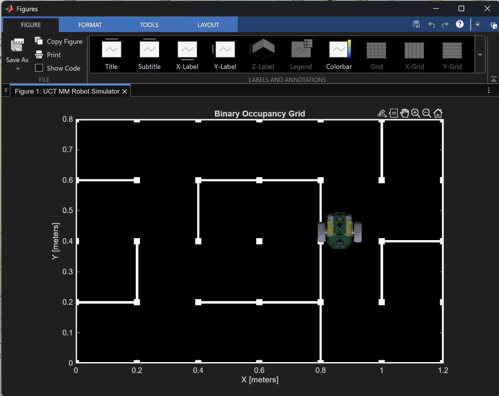
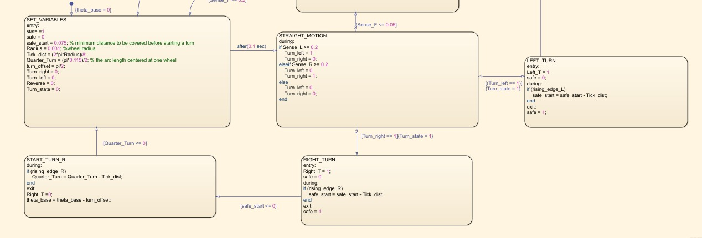
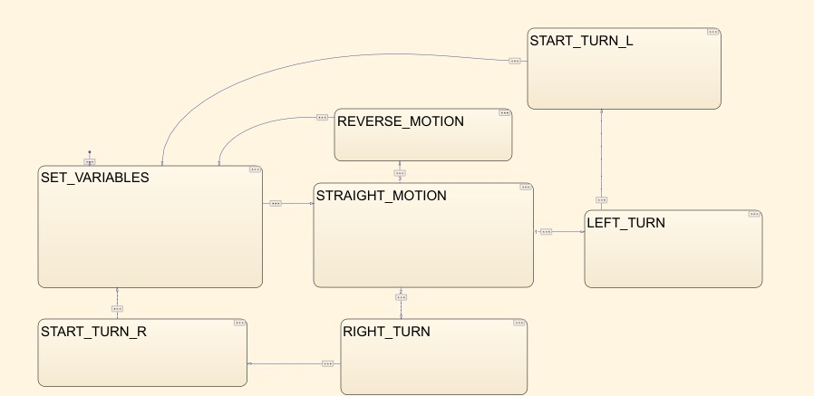

Maze-Solving Robot
A small wheeled robot that finds its way through a physical maze on its own, using a state machine built in MATLAB/Simulink Stateflow.
What it was
The robot runs on a Stateflow state machine with states for straight motion, left/right turns, and reversing, switching between them based on wall-following sensor readings. I tested the logic in a MATLAB occupancy-grid simulation before running it on the physical robot in a maze built from MDF board and aluminium extrusion.
- Designed the Stateflow logic —
SET_VARIABLES,STRAIGHT_MOTION,LEFT_TURN,RIGHT_TURNandREVERSE_MOTIONstates, with sensor thresholds driving the transitions. - Simulated the robot against a binary occupancy grid in MATLAB before testing on hardware.
- Ran the logic on the physical 4-wheel robot chassis and tuned it against the built maze.
At a glance
TypeIndividual
ToolsMATLAB, Simulink Stateflow
Hardware4-wheel robot chassis
Gallery




